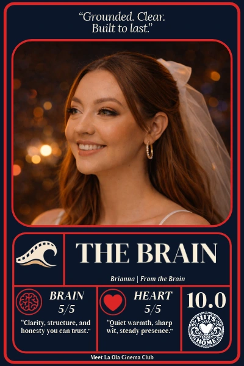
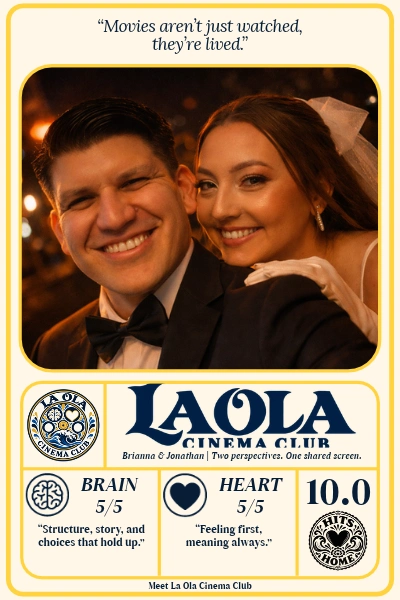

Cinema Banger
Big-screen energy. The kind of watch we want to talk about on the way out.
Explore this stampThe Club Guide
Two people can see the same film and leave with different feelings. That’s part of the point. Here’s how to read our scores, our colors, and our Club Stamps.

The BrainBrianna’s perspective, out of 5. Her taste, her response, her side of the conversation.
 The Heart
The HeartJonathan’s perspective, out of 5. What connected, what entertained, and what stayed with him.

The ClubThe two scores added together, out of 10. Quarter points count. A whole score is written as 8.0 or 10.0.
The original archive used a combined score normalized to 5. We display the equivalent total out of 10 here while preserving the original cards. A score is our response to a film, not a universal verdict.
Follow the colors
The background is the primary genre. The border, lines, and matching accents show the secondary genre. A black background means Horror; a black border can mean Horror is part of another genre’s story.
Primary shelves show matching backgrounds first. Switch to Secondary genre to see that color on the border. If fewer than three primary cards exist, extra secondary examples are labeled. These are high-scoring examples from our current Club reviews. Genre favorites can grow into a more personal selection as the collection evolves. Older archive colors are preserved as part of their original editions.
The impression it left
The score tells you how much we liked it. The stamp tells you how it landed. There’s no automatic score-to-stamp conversion, and two films with the same number can leave very different impressions.
Big-screen energy. The kind of watch we want to talk about on the way out.
Explore this stamp
The personal one: a feeling, memory, or truth that stays with us.
Explore this stamp
Something to turn over afterward. Questions, perspectives, and conversations.
Explore this stamp
The mood, music, style, or atmosphere is a big part of the pleasure.
Explore this stamp
Things we enjoyed alongside things that did not quite come together.
Explore this stamp
A wild or uneven ride that still gave us a good time.
Explore this stamp
It may find its people. This time, we were not those people.
Explore this stamp
A watch we would have been happy to pass on.
Explore this stamp